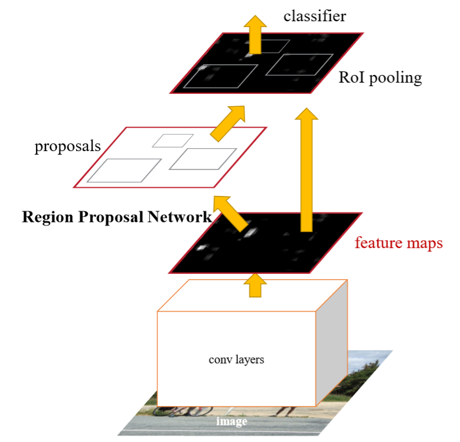
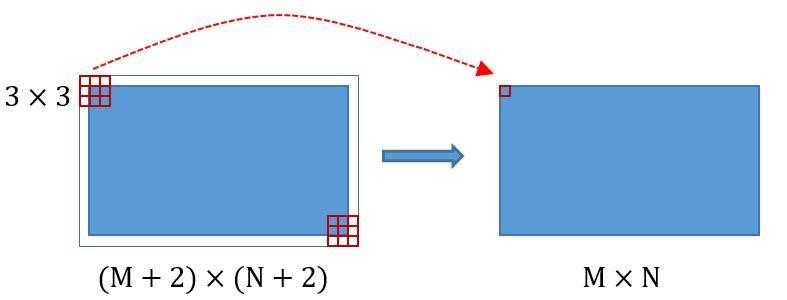
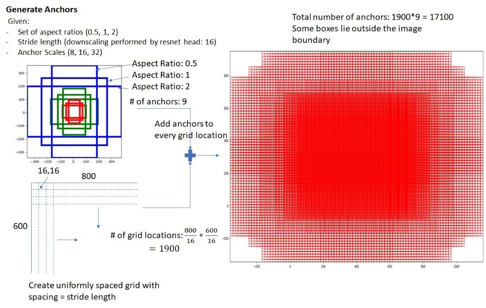
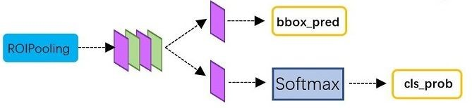

Faster R-CNN 回顾
本文最后更新于：39 分钟前
因为要准备面试，现在要重新回顾下Faster R-CNN这个几年前我深受其折磨过的模型。不过也好，温故而知新嘛，现在重新看下之后，确实是有了不少新的感受。
介绍
FR-CNN是一种端到端 (end-to-end) 的目标识别网络，它将feature extraction，proposal提取，bounding box回归，以及classification都整合在了一个网络中，因而准确度上进一步提升。
- one-stage & two-stage
相比于Mobile SSD这种one-stage的模型，FR-CNN采用two-stage的方法（即先提取出可能存在目标的区域proposal，再对proposal进行分类）。
虽然这样势必会导致速度上的损失，但是也保证了更高的精准性，特别是当后续算法（如跟踪）及其依赖于目标识别的精度时。 - 总体流程
模型流程如下：- 给定一幅
P * Q大小的图像，首先将其resize到M * N，送入网络。 - 用Conv Layer提取feature map，提取出的feature map将会在后面再次用到。
- 生成若干种anchor，并用RPN (Region Proposal Network) 判定anchors是positive还是negative，以及其偏移量 (regression)，计算得到的proposal。
- 将proposal和feature map送入RoI Pooling层，经过Full Connecting Layer和Softmax即可得到目标分类。

- 给定一幅
Conv Layer

Conv Layer包含了13个conv层，13个ReLU层，以及4个pooling层。
并且：
- conv层中
kernel_size= 3,padding= 1,stride= 1
这样可以保证conv层不改变输出矩阵的大小 - pooling层中
kernel_size= 2,padding= 0,stride= 2
pooling层使输出的长宽都变为原来的1/2
最终Conv Layer的输出尺寸为(M / 16) * (N / 16)
p.s. 如果对于这些CNN中的参数不是很了解，这篇博文讲的很好，推荐学习。
RPN
对于目标识别，一种做法是先确定目标在哪里，然后再去识别它是什么，proposal就是为了解决目标在哪里的这个问题。
对于Faster R-CNN之前的目标检测模型，最耗时的部分是proposal提取。如SS算法，这个提取的过程耗时甚至比分类还要多，（Selective Search, SS, 通过比较相邻区域的相似度来把相似的区域合并到一起，重复这个过程最后得到目标区域proposal）严重影响了模型的实时性。
FR-CNN的作者就想，为什么不能直接用NN来进行proposal提取呢？ 于是就诞生了RPN。
RPN主要做两件事：
- RPN Classification: 生成许多anchor（1:1, 1:2, 2:1的）然后用二分类去判定这些anchor划分的feature map是否是proposal (positive or negative)。
- RPN bounding box regression: 光生成anchor是很不精确的，还要用bounding box regression去细化proposal的位置。
RPN Classification
首先讲第一件事，在feature map上均匀划分出9 * h * w个区域，其中h和w分别是feature map的高度和宽度。
然后就可以给每一个anchor打标签，判断其为背景还是前景。
p.s. 不是所有的anchor都会拿来标注，一些规则如下：
1. feature map边界线上的anchor
2. 背景和前景交界地带的anchor不参与训练
3. 前景的个数不能超过batch size的一半

RPN bounding box regression
首先看下bounding box的表示方法，Faster R-CNN的作者采用的是用4个参数，即box的中心点，和box的宽和高来表示。
然后再来聊下bounding box regression，现在我们有positive anchor A和ground truth G，我们的目标是寻找一种关系，使得输入的A经过映射后得到一个跟G更加接近的回归窗口G’, 即：
- ,
- 寻找一种变换F， 使：
其中
那么做何种变换F呢？比较简单的思路是：
- 先做平移
- 再做缩放
可以看出，其实就是用4个偏移量所近似的线性变换去控制anchor的位置和大小。
损失函数为：
其中，是对应anchor的feature map所组成的特征向量，是需要学习的参数，是真实值所对应的特征向量.
总结一下RPN的工作就是：
生成anchors -> 用二分类器和Softmax提取positive anchors -> 对positive anchors进行bounding box regression -> 再Proposal Layer生成较为精确的proposals
RoI Pooling
为啥需要RoI Pooling？
对于传统的CNN (AlexNet and VGG)，当网络训练好后输入和输出的图像尺寸必须为固定值，如果输入图像大小不定，就必须要对图像进行处理。有2种解决方案：
- 从图像中裁剪 (crop) 一部分传入网络
- 将图像缩放 (warp) 成一定大小后传入网络
而这两种方案都不尽人意，前者破坏了图像的完整性，后者改变了图像的原始形状信息。
如何解决
那么Faster R-CNN提出的解决方案是什么呢？—— 池化！
既然想在尽量不改变图像信息的前提下得到固定size的输出，只需要将“重要的信息提取出来”就可以了。
RoI Pooling Layer forward过程如下：
- 将proposal
M * N按照一个scale参数（默认为1/16）映射回M*scale * N*scale大小 - 将每个proposal对应的feature map水平分为
7 * 7的网格 - 对网格的每一份都进行max pooling
最后就能得到pooled_w * pooled_d(7 * 7)大小的固定输出。
Classification
最后将RoI Pooling后得到的浓缩后的pooled feature map送入后续网络进行分类，网络结构如下图

即用Full Connect Layer和Softmax对pooled feature进行分类，
并且再次对bounding box进行regression，得到更精确的bbox。
总结和思考
到此Faster R-CNN的原理就讲解完了，其主要通过RPN采集图像中的proposal，再对proposal进行分类和微调来获得最终的分类结果和bbox。其中RPN和分类的CNN会共享一部分的卷积层，用以提高效率和准确性。
不得不说这个实现即使是在现在看也是非常的有意思，特别是RoI Pooling的设计很elegant
以前可能更多的是将其视作一个黑盒子来使用，这样的方式终究还是走不远的😢
虽然现在笔者的主攻方向是NLP，但是CV中的很多奇技淫巧乃至这两个任务本身就有很多的共通之处，还是有很多可以学习借鉴的地方。
Ref
[1] 张磊，从结构、原理到实现，Faster R-CNN全解析（原创），https://zhuanlan.zhihu.com/p/32702387
[2] 白裳，一文读懂Faster RCNN，https://zhuanlan.zhihu.com/p/31426458
本博客所有文章除特别声明外，均采用 CC BY-SA 4.0 协议 ，转载请注明出处！